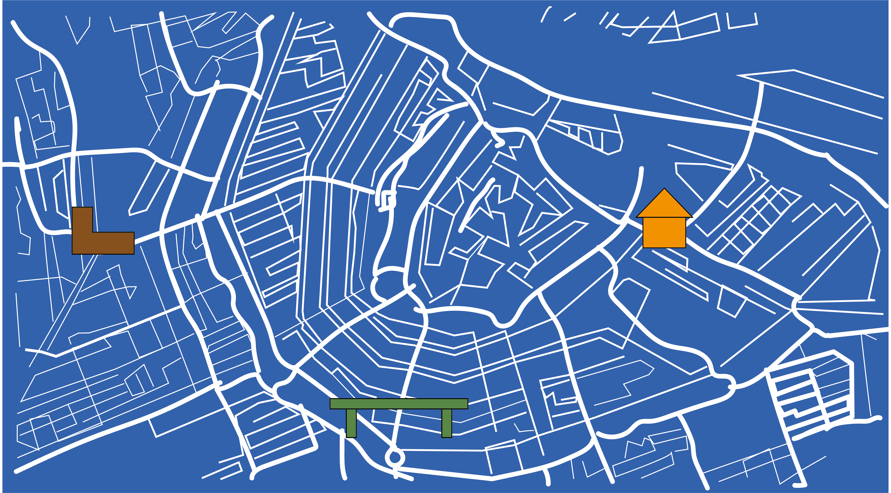
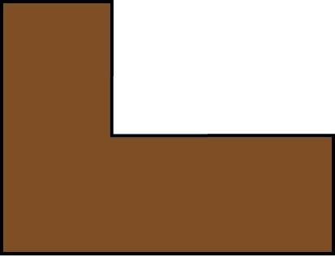
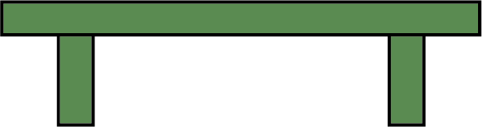
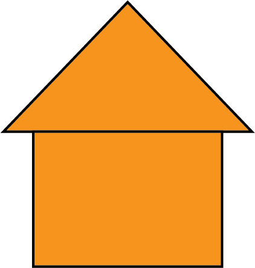

-

De L-vorm mini bieb is te vinden op de 2e Hugo de Groot straat ter hoogte van Het Hugo de Groot plein in het westen van amsterdam.
-

De mini bieb die op een bankje lijkt is te vinden op de prinsengracht in het centrum van Amsterdam ter hoogte van het Anne Frank huis.
-

De mini bieb die op een huisje lijkt is te vinden aan het einde van de Valkenburgstraat in het centrum van Amsterdam ter hoogte van het Mr.Visserplein.